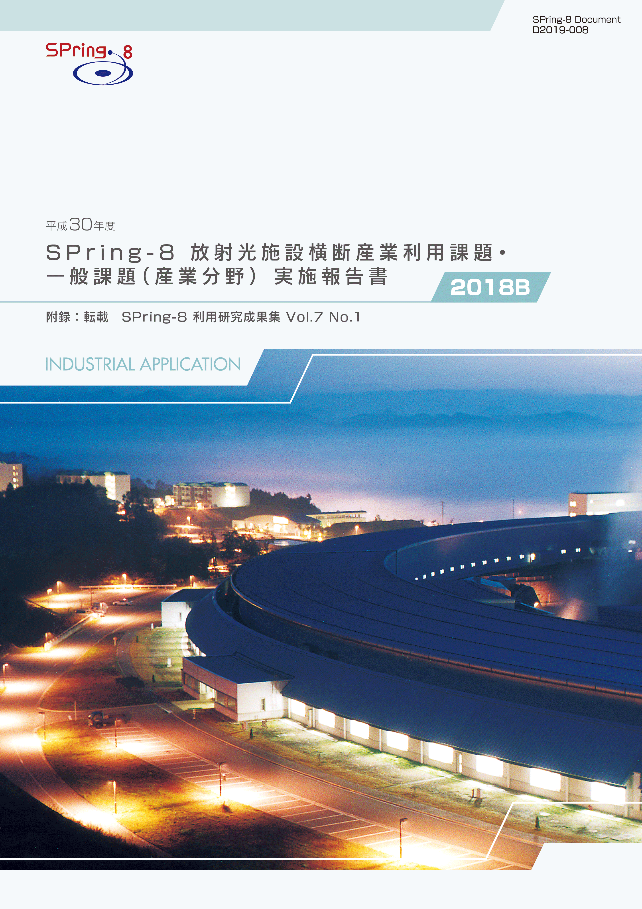
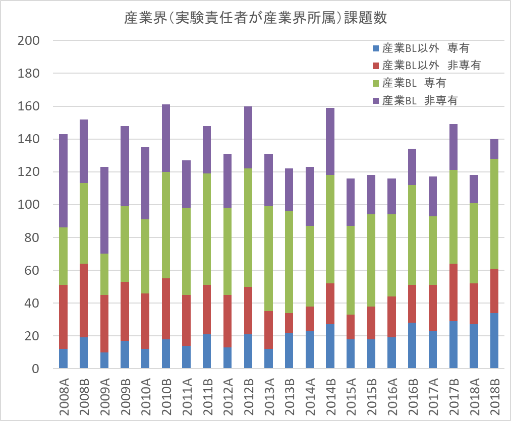

1. はじめに2. 課題募集制度の概要
3. 成果公開の考え方
4. 実施状況
5. 産業利用分野の利用動向と課題
6. 報告書
* 送付を希望される方は、連絡先（氏名、所属、〒住所、E-mail）をご記入の上、 事務局 support@spring8.or.jp までE-mailでご連絡ください。
2018A期は一般課題、重点課題ともに利用制度を大きく変更した。2014A期より実施していた領域指定型重点課題「産業新分野支援課題」を終了し、それにかわる重点課題として、「放射光施設横断産業利用課題」の募集を開始した。また、適時のSPring-8利用に向けて産業利用ビームライン3本については課題募集期を半期3回、年6回とした。本報告書は新な制度の2期目となる2018B期の産業利用分野における課題実施状況の報告を目的として、同利用期に実施した一般課題（産業利用分野）と放射光施設横断産業利用課題のうちSPring-8利用研究成果集としての審査を行わなかった課題の報告書を収録したものである。
- 一般課題（産業利用分野）
一般課題（産業利用分野）の課題とは、課題申請の際に産業利用分野（I）での課題審査を希望した成果非専有の一般課題（課題審査は課題審査委員会産業利用分科会が行う）である。なお、実験責任者もしくは共同実験者に民間企業もしくは、それに準じる機関に所属する者が含まれていることを申請要件としている。民間企業に準ずる機関とは、民間企業からの委託による試験・研究・開発を事業に含んでいる機関と定義している。また、地方自治体が設置している公設置試験場や地方独立行政法人等（○○県工業技術センター）は、民間企業に準ずる機関から除外している。産業利用ビームライン以外での実施を希望する一般課題（産業利用分野）は他分野の一般課題と同様に課題募集は年2回であるが、3本の産業利用ビームラインにおいては年6回（半期3回）の募集を行う。一般課題（産業利用分野）に特徴的な制度は以下の6項目である。
- 産業利用ビームラインI（BL19B2）、II（BL14B2）、III（BL46XU）は半期ごとに3回（1期、2期、3期）の課題募集を行う（年6回課題募集を実施）。これらのビームラインでは成果非専有の一般課題は、審査希望分野が産業利用分野である一般課題（産業利用分野）のみ申請を受付けている（これらのビームラインを指定した申請であるものの、審査希望分野が他分野の課題は申請者の希望にかかわらず産業利用分野で審査する）。*注）
- 新規利用拡大の観点から課題審査において利用経験を考慮する。
- 民間企業利用拡大の観点から課題審査において所属機関を考慮する。
- 課題実施後約2～4か月以内に所定の書式の産業利用課題実施報告書を提出する。なお、この報告書はSPring-8利用研究成果集として審査を受けることも可能である。
- 全採択課題に担当コーディネーターを配置する。
- 科学技術的妥当性に関する審査は
（1）産業基盤技術としての重要性および発展性
（2）社会的意義および社会経済への寄与度の観点を重視して実施する に重点をおいて実施する。
*注）産業利用ビームライン3本でも大学院生提案型課題は受付けている。一般課題（産業利用分野）と同様の審査が行われる。
- 放射光施設横断産業利用課題
「放射光施設横断産業利用課題」を領域指定型の重点研究課題として、2017年9月25日に指定した。その狙いは以下のとおりである。
近年、産業界の利用を目的とした放射光施設が日本国内に複数設置さて、産業界による放射光利用機会も大きく拡大したため、それぞれの施設の性能や利用制度の特徴を活かした放射光利用が望まれる。しかし、施設ごとに利用者が固定化する傾向も見られ、各施設の特徴を十分に活用した利用になっているとは言えない。放射光施設横断産業利用課題は、最適な施設における放射光産業利用実験の実施促進とそれを通じた利用成果の拡大を目指している。
2-1） 募集の対象
SPring-8以外の日本国内に設置された放射光施設での実験結果を踏まえ、SPring-8利用が適すると判断された産業分野の課題を募集の対象としている（課題申請時にSPring-8以外の施設での実験が実施済みもしくは採択済みであることが必要）。また、一般課題（産業利用分野）と同様に、実験責任者または共同実験者に、民間企業または産業界に準ずる機関等に所属する者を含むことも課題申請の要件としている。
2-2） 対象ビームライン、シフト数割合、及び募集
産業利用ビームラインI（BL19B2）、II（BL14B2）、III（BL46XU）を対象に、ユーザー実験に供するビームタイムのうち20%以内（施設留保を含めたユーザータイムの16%以内）を配分する。課題募集は一般課題と同時期に半期3回行う。
2-3） 審査
一般課題（産業利用分野）に先んじて課題審査委員会産業利用分科会が審査を行う。なお、放射光施設横断産業利用課題として不採択となった課題は、自動的に一般課題（産業利用分野）の課題として、他の一般課題と一緒に改めて審査される。放射光施設横断産業利用課題においては一般課題（産業利用分野）の観点に加えてSPring-8と他施設の利用の有用性も考慮して審査する。
2-4） 報告
WEBより提出するビームタイム利用報告書、利用実験課題報告書に加えて課題実施後約2～3か月以内に所定の書式の産業新分野課題実施報告書を提出する。なお、この報告書はSPring-8利用研究成果集として審査を受けることも可能である。
成果の公開については、放射光施設横断産業利用課題、一般課題（産業利用分野）ともに他の成果非専有の一般課題と同様に学術誌上への論文掲載（博士論文も含む）もしくはSPring-8利用研究成果集への採録による成果公開が求められる。この産業利用課題実施報告書及び放射光施設横断産業利用課題実施報告書の提出は成果の公開とは認定されないが、これらの報告書は著者からの申し出により課題ごとにSPring-8利用研究成果集としての審査を受けることが可能である。SPring-8利用研究成果集としての審査を受けない実施報告書は、JASRIコーディネーター等による校閲を経て課題実施期が終了して約6か月後に出版･公開されるが、それ以外はSPring-8利用研究成果集としての掲載をもって公開とする。なお、利用研究成果集は、複数課題で1報も認めているが、継続した研究であっても放射光施設横断産業利用課題、一般課題（産業利用分野）ともに1課題あたり1報を原則としている（例外：研究内容に継続性がある成果公開優先利用課題との統合）
以下に平成30年度2018B期の放射光施設横断産業利用課題、及び一般課題（産業利用分野）の応募・採択結果を表1、表2にまとめる。
- 応募・採択結果 放射光施設横断産業利用課題
表 1．応募時期及び研究機関別課題応募・採択結果
＊放射光施設横断産業利用課題では不採択となり、一般課題（産業利用分野）で再審査で採択された課題を除く（B1期1課題、B2期1課題）。募集時期 機関分類 応募数採択数*採択率（%）第1期募集学官11100.0産業界00-合計11100.0第2期募集学官2150.0産業界00-合計2150.0第3期募集学官11100.0産業界100.0合計2150.0総計5360.0
放射光施設横断産業利用課題の2018B期を通じた応募数は5件でそのうち3件が採択された。SPring-8と並行して利用した施設は、あいちSRセンター、PF等であった。今回、産業界からの応募が1件あったが、残念ながら不採択（一般課題として再審査されても不採択）であった。2018A期と同様に応募数が少なかった原因は、制度の認知度が十分でないことに加えて、産業界の利用が多いあいちSRセンターや佐賀LS等では、産業界の利用は有償非公開が主流であることから、SPring-8利用経験がない他施設の産業界利用者にとって審査を伴う成果非専有課題の利用に抵抗があることが原因と推定している（成果専有課題が共用ビームラインの産業界実施課題の2/3程度あること、他施設の利用経験者から測定代行をはじめとする成果専有課題の利用相談や問い合わせ頻繁にあることからの推察）。
- 応募・採択結果 一般課題（産業利用分野）
表2．応募時期及び研究機関別一般課題応募・採択結果
*応募数と採択数には放射光施設横断産業利用課題で不採択となり、一般課題として再審査されて採択となったB2期の1課題を含む。一般課題と同時に審査される大学院生提案型課題の応募数（B1期 11課題、B2期 5課題、B3期 9課題）、採択数（B1期 4課題、B2期 4課題、B3期4課題）を除く。12条課題として扱われるJASRI職員が実験責任者の一般課題（応募B1期 2課題、B2期4課題、B3期3課題、採択B1期2課題、B2期3課題、B3期2課題）を含む。募集時期 機関分類 応募数＊採択数採択率（%）第1期募集 学官342264.7産業界221568.2合計563766.1第2期募集 学官352571.4産業界4375.0合計392871.8第3期募集 学官20840.0産業界4375.0合計241145.8総計1187664.4
一般課題（産業利用分野）の2018B期と2017B期を比較すると応募課題数は10%弱の減少であったが、採択課題数は20%と大きく減少したため、採択率も10%近く低くなった。特に第3期は成果占有課題が多く申請されたため、採択率が50%を下回ることとなった。なお、産業界からの課題申請数、採択数ともに2017B期の半分程度にまで減少し、産業界による成果占有課題利用の傾向がさらに強くなった。
- SPring-8利用研究成果集としての審査
前記のとおり2011B期より成果公開の扱いが変更になったため、実験責任者の希望に応じて重点産業利用報告書をSPring-8利用研究成果集（現在はSPring-8/SACLA利用研究成果集）として査読審査を受けて公開文書として扱うことも可能とした。放射光施設横断産業利用課題及び産業利用分野の一般課題も同様で、SPring-8/SACLA利用研究成果集として審査を受ける公開文書とすることができる。SPring-8/SACLA利用研究成果集への公開は査読審査が終了し成果審査委員会での承認後となるため、SPring-8/SACLA利用研究成果集に投稿予定の課題は採録していない。このため、今回は2018B期の採録対象課題72課題（採択された全審査課題91課題からJASRI職員が実験責任者の7課題、大学院生提案型課題12課題を除く）のうち、59課題を掲載する。
-
図1は産業利用ビームラインが現在の3本体制になった2008A期以降の産業界実施課題の推移である。図1が示すように、1，2月の運転がなかった2013B期を除いて毎年B期の方がA期よりも実施数が多く、2016B期、2017B期とほぼ同じである。具体的には2018B期に実施され全共同利用研究課題821課題のうち、民間企業等の産業界に所属する利用者が実験責任者であった課題は140課題で全体の17.0%となり2017B期とほぼ同じであった。このうち成果占有課題は101課題で産業界が実施する課題の72%で、相変わらず産業利用ビームラインで実施する成果専有課題のほとんどが随時募集の測定代行の占める割合が高い。その一方で、産業利用ビームライン以外の共用ビームラインでの成果占有利用も漸増傾向であることから、産業界の放射光利用技術が多様化しつつあると考えられる。

図1. 共同利用実験として実施された産業界課題の実施数推移
附録 SPring-8利用研究成果集 Volume 7 No.1
2012A1719, 2012B1889 |
次世代 CMOS チャネル実現に向けた硬 X 線光電子分光によるグラフェン・ゲート絶縁膜界面構造の最適化 | 佐藤 信太郎 | 国立研究開発法人産業技術総合研究所, 株式会社富士通研究所 |
2012B1853 |
シリア・土器新石器時代出土の青色ビーズにおける人類最初の人造青色着色技術の解明 | 谷口 陽子 | 筑波大学 |
2014B1605 |
異常分散 X 線回折法による電池正極材料 LiNi1/3Mn1/3Co1/3O2 の構造解析 | 北原 周 | 株式会社コベルコ科研 |
2014B3325, 2015A3325, 2016A3325 |
In situ XAFS によるPd/CZO2 触媒の劣化解析 | 末広 省吾 | 株式会社住化分析センター |
2014B3373, 2015B3373 |
環境温度を考慮したリチウムイオン 2 次電池 in situ XRD 測定法の開発 | 末広 省吾 | 株式会社住化分析センター |
2015A1006 |
Ag 含有ゼオライト蛍光体の実用化のための局所構造解析 ― 水中における Ag 交換 X 型ゼオライトの Ag 局所構造 ― | 阪根 英人 | 山梨大学大学院 |
2015A1671 |
リチウムイオン電池のオペランド X 線回折計測 | 平野 辰巳 | 株式会社日立製作所 |
2015A1677 |
BL14B2 における透過配置遠隔自動 XAFS システムの開発 | 高垣 昌史 | 公益財団法人高輝度光科学研究センター |
2015A1687 |
雲母含有剤による加熱下でのセシウムの捕捉機構 | 原田 浩希 | 日立造船株式会社 |
2015B1591 |
PEEM による積層セラミックコンデンサにおけるチタン酸バリウムの劣化メカニズム調査 | 村木 智則 | 株式会社村田製作所 |
2017B1601 |
圧力下における炭化イットリウムの合成と結晶構造 | 川島 健司 | 株式会社イムラ材料開発研究所 |
「平成30年度 SPring-8放射光施設横断産業利用課題・一般課題(産業分野)実施報告書 (2018B)」送付を希望される方は、 連絡先（氏名,所属,〒住所,E-mail）をご記入の上、事務局 support@spring8.or.jp までE-mailでご連絡ください。